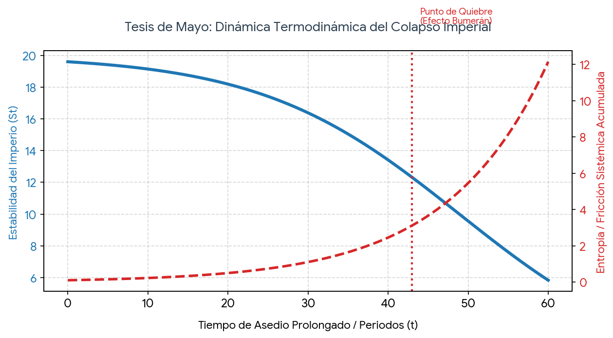

Su Santidad, excelentísimos jefes de Estado y de Gobierno de las naciones del mundo, distinguidos delegados, hermanos y hermanas de la gran comunidad humana:
Este alegato emana de la condición inextinguible de haber nacido en la isla de Cuba. Expreso estas ideas en lengua española bajo una premisa deliberada: si el francés es el lenguaje del amor y el inglés el del comercio, el español es el idioma de los dioses. Su vasta riqueza semántica y su densidad conceptual nos otorgan la facultad única de desglosar, desde múltiples y profundas dimensiones, la complejidad de los acontecimientos que definen nuestro tiempo. Porque la historia se repite, y los hombres de ayer son los mismos de hoy.
No les habla hoy un dirigente político, ni un estratega militar, ni el representante de un gran conglomerado financiero. Les habla una persona común. Alguien que no posee más credencial que su propia conciencia y la vivencia en carne propia de esa verdad circular.
Al observar este viaje humano de más de diez mil años, descubrimos con serenidad que el doloroso ciclo de romper y empezar no es nuevo. El ego de los hombres se nubla precisamente en la cumbre del poder, repitiendo el mismo error de cálculo. La historia ha dejado registradas las huellas de esta dolencia en los cimientos de los gigantes del pasado: lo vio el desierto con la implacable maquinaria del Imperio Asirio; lo sufrió la soberbia a gran escala de Persia frente a un oponente menor; quedó grabado en el colapso moral y sistémico de Roma; en las bancarrotas sucesivas del absolutismo español; y en el repliegue definitivo del dominio marítimo británico. Todos estos titanes compartieron el mismo patrón: la ilusión de que el éxito del pasado garantizaba la victoria perpetua, olvidando que el abuso introduce una fricción insostenible que precede a su propio abismo.
Nos han querido hacer creer, desde que el mundo es mundo, que la geografía de la dignidad se mide en kilómetros cuadrados o en el tamaño de las flotas que custodian el horizonte. Nos han repetido, con la fría soberbia de los que redactan decretos de asfixia, que los fuertes hacen lo que su poder les permite y los pequeños sufren lo que su debilidad les impone.
Esa es la vieja mentira que los imperios heredan de siglo en siglo. Se la dijeron los generales de Atenas a los habitantes de la pequeña isla de Melos hace más de dos mil años. Se la dicen hoy, con el mismo tono de superioridad y el mismo desprecio por la vida, los administradores modernos del castigo global a las naciones que se niegan a entregar las llaves de su casa. El bloqueo, el cerco económico, el intento deliberado de rendir a un pueblo por la vía biológica del hambre y la escasez, no son inventos de esta era; son los muros de circunvalación con los que la soberbia intenta tapar el sol de los independientes.
Atenas aplastó a Melos. Bloqueó sus puertos, desmanteló sus hogares, vendió a sus hijos y creyó que con ese acto de crueldad ejemplar había sellado su dominio eterno sobre el mar. Qué terrible y perfecta es la justicia del tiempo. El ego que se alimenta de la impunidad termina por devorar la razón. Embriagados por la ilusión de que podían vencer siempre, los mismos generales que ordenaron el asedio de la pequeña isla arrastraron a su imperio, pocos meses después, a la desastrosa aventura de Sicilia. Allí cayeron sus barcos, allí se desangró su ejército, y pocos años más tarde, la gran potencia que inventó el bloqueo para otros terminó sitiada, famélica y de rodillas, viendo cómo demolían sus propias murallas al ritmo de las flautas enemigas.
Ese es el efecto bumerán del poder desmedido. Ningún imperio es eterno, ninguna victoria basada en el abuso es para siempre. Cuando una superpotencia moderna utiliza su banca, sus leyes unilaterales y sus amenazas de pólvora para asfixiar la economía de un país pequeño, no está demostrando fuerza; está sembrando los vientos de su propia decadencia. Está obligando al mundo a buscar otros caminos, está unificando el silencio de los dignos y, sobre todo, está construyendo el pedestal de su propio error futuro. La soberbia es un mal consejero militar y un pésimo estratega político.
Y es que no podemos olvidar que el mismo Dios que sopesó las acciones de los hombres in aquella experiencia de la antigüedad, es el mismísimo Dios que existe y observa al mundo hoy en día. Nada escapa a su balanza de justicia. Por eso, la tragedia de Melos y la caída de Atenas no son un cuento muerto del pasado; son una señal providencial y una advertencia viva. Dios ha dejado grabada esa huella en la historia como una oportunidad de oro para el mundo de hoy, para que las potencias de nuestra era entiendan que hay que ir por otro camino. Continuar por la senda del abuso y el asedio significaría ignorar la lección divina, haciendo que la humanidad haya caminado y sufrido en balde a lo largo de los siglos.
A las naciones que hoy se encuentran en condiciones similares, a las islas y a los pueblos cercados por el frío de un invierno extranjero, la moraleja de la historia les deja un mensaje de fe combativa: el asedio duele, la escasez golpea el estómago y cala en los huesos, pero resistir y luchar no es un acto de terquedad, es una inversión en el futuro. Los melios físicos desaparecieron de su isla, pero su nombre es hoy un sinónimo universal de dignidad que estremece las conciencias. Atenas conservó sus templos, pero perdió su alma y su imperio en el mismo foso de soberbia que cavó para otros.
Que lo sepan los gigantes de la tierra, los de antes y los de ahora: el agua siempre encuentra la forma de burlar el dique. El cerco puede apretar la garganta de un pueblo, pero si el pecho se mantiene firme, el aire de la soberanía no se puede confiscar. La historia no ha terminado. Las murallas de los bloqueadores siempre caen, y al final del camino, cuando el humo de los imperios se disipa, lo único que queda en pie sobre la arena es el derecho inalienable de los pueblos a escribir, con sus propias manos y sin el permiso de nadie, el guion de su propio destino.
¡Muchas gracias!
Nacer en una isla no es una mera coincidencia geográfica; es un destino ontológico que moldea la mirada [p. 19]. La isla impone un límite físico visible: el mar que la abraza es, al mismo tiempo, una frontera y un horizonte infinito. Quien nace en la isla de Cuba aprende que la realidad se mide en la intensidad de la resistencia frente al oleaje. Desde este mirador atlántico, se hace evidente que la historia insiste en repetirse y la naturaleza humana permanece invariable. Los hombres de hoy albergan los mismos temores, la misma soberbia y los mismos errores de cálculo que los generales antiguos [p. 19].
Para desglosar esta verdad, el vehículo del pensamiento no puede ser elegido al azar. Si el francés es el lenguaje del amor por su cadencia lírica, y el inglés el del comercio por su pragmatismo directo, el español emerge como el idioma de los dioses [p. 19]. Su vasta riqueza semántica posee una densidad conceptual única que nos otorga la facultad de nombrar los matices del dolor, de la dignidad y de la resistencia de maneras que otras lenguas ignoran. Esta obra surge de la voz de una persona común, un ciudadano que observa el fluir de los tiempos sin el velo del interés político. Solo la persona común posee la pureza de mirada necesaria para denunciar la ceguera del fuerte y validar el dolor del opresor [p. 18].
Atenas, convertida en un imperio marítimo hipertrofiado, envió una flota imponente a la pequeña isla de Melos, una comunidad que solo deseaba mantener su neutralidad [p. 19]. La respuesta de los embajadores imperiales desnudó la fría lógica del poder hegemónico: "Los fuertes hacen lo que su poder les permite y los pequeños sufren lo que su debilidad les impone" [p. 19]. Al negarse los melios a entregar las llaves de su casa, Atenas implementó un cerco económico absoluto, bloqueando puertos e interceptando el comercio. El intento deliberado de rendir a un pueblo por la vía biológica del hambre no es una innovación moderna; es la misma táctica arcaica de la soberbia [p. 19].
Atenas aplastó materialmente a Melos, pero la historia ya estaba preparando el bumerán [p. 19]. El concepto griego de Hubris define la desmesura que hace que una nación se crea inmune a las consecuencias de sus actos. Embriagados por la ilusión de una victoria perpetua, los mismos generales atenienses arrastraron a su imperio a la desastrosa expedición de Sicilia [p. 19]. Allí se hundieron sus flotas y se desangraron sus ejércitos, culminando con la gran potencia sitiada, famélica y viendo cómo demolían sus propias murallas al ritmo de las flautas enemigas [p. 19].
El Imperio Asirio: Basó su dominio en la maquinaria militar y en el asedio absoluto contra las comunidades pequeñas [p. 23]. Creyeron que el miedo era una variable controlable, pero este modelo introduce una fricción insostenible [pp. 18, 24]. Ante la primera fisura en el centro, una coalición de pueblos oprimidos se levantó borrando su capital, Nínive, demostrando que el terror jamás sostiene las estructuras a largo plazo [p. 23].
El Imperio Persa: Expandió sus fronteras exigiendo tributos obligatorios, pero la soberbia de la escala los traicionó al intentar cruzar el mar para someter a las pequeñas ciudades griegas [p. 23]. Su masa burocrática lenta se estrelló contra la determinación de comunidades impulsadas por la defensa de su suelo, demostrando que los gigantes se vuelven incapaces de reaccionar ante los cambios sutiles del entorno [p. 23].
El Imperio Español: Extrajo toneladas de metales preciosos e impuso un monopolio cerrado sobre continentes enteros [p. 22]. Esta abundancia fácil nubló su juicio económico, arrastrando a la Corona a bancarrotas sucesivas y convirtiendo al coloso en el enfermo empobrecido del siglo XIX, confirmando que los monopolios comerciales forzados generan una parálisis interna terminal [p. 22].
El Imperio Británico: Dominó los flujos globales mediante la diplomacia de las cañoneras y el control comercial forzado [p. 22]. Operaron bajo la ilusión de una victoria perpetua [p. 18], pero mantener redes globales de coerción generó un costo de mantenimiento superior a los beneficios extraídos. La entropía sistémica provocó su repliegue definitivo a su pequeña isla original [p. 22].
La historia no es un caos ciego gobernado por la impunidad. El mismo Dios que sopesó las acciones de los hombres en la antigüedad observa al mundo hoy en día; nada escapa a su balanza de justicia [p. 21]. Mientras los imperios calculan el éxito de sus bloqueos mediante estadísticas macroeconómicas y decretos de asfixia [p. 19], la balanza de Dios mide el sufrimiento infligido y la dignidad resistida. El abuso no es un gasto gratuito en el universo; es una deuda espiritual que el sembrador acumula contra su propio destino [p. 19]. El silencio divino no es autorización para la impunidad, sino el espacio de prueba donde la acumulación de fricción termina por desplomar al gigante de manera súbita e irreversible [pp. 18, 24].
La caída de los antiguos opresores es una señal providencial y una advertencia viva dejada en el mapa de la memoria colectiva [p. 21]. Dios ofrece una oportunidad de oro para que las potencias de nuestra era entiendan que hay que ir por otro camino antes de que el bumerán complete su parábola de destrucción [p. 21]. Continuar por la senda del asedio significaría ignorar la lección divina, haciendo que la humanidad haya caminado y sufrido en balde a lo largo de los siglos [p. 21]. La resistencia de la isla de Cuba representa un eslabón metafísico que demuestra que el aire de la soberanía no se puede confiscar y que la dignidad es la única fuerza capaz de sobrevivir a las ruinas de todos los bloqueadores [p. 19].
Lo que es teológicamente injusto es también matemáticamente insostenible [p. 21]. Imagine que el orden geopolítico global es un gran motor, y el bloqueo económico es como echar arena de forma constante en sus engranajes [pp. 25-26]. Al principio, el motor es tan grande que parece no inmutarse; esta es la Trampa del Ego [p. 18]. Definimos la Ecuación de Estabilidad del Sistema ($S_t$) como [pp. 25-26]:
Donde cada variable representa un factor real de la lucha geopolítica:

Visualización del Punto de Quiebre provocado por la acumulación de entropía exponencial en el sistema [pp. 25-26].
Todo esfuerzo por asfixiar un flujo natural de energía genera una fuerza opuesta llamada entropía [pp. 25-26]. Sostener un cerco artificial requiere un despliegue masivo de recursos que genera un desgaste interno exponencial [pp. 25-26]. El entorno global responde generando anticuerpos: desdolarización acelerada, liquidación de contratos en monedas locales [p. 19], trazo de rutas logísticas alternativas inconfiscables [p. 19] y la unificación del silencio de las naciones dignas que asilan políticamente al bloqueador [p. 19]. La curva exponencial demuestra científicamente que el bloqueo se convierte en una autotrampa energética para el grande [p. 19].
A medida que el tiempo ($t$) avanza, el término exponencial ($e^{\sigma t}$) crece a tal velocidad que termina por anular la capacidad base del imperio, haciendo que la estabilidad ($S_t$) tienda matemáticamente a cero [pp. 25-26]. El colapso del bloqueador es una certeza estadística [pp. 25-26]. Al alcanzar este punto de quiebre, el balance se invierte por completo. Las redes comerciales alternativas se vuelven el nuevo estándar universal, y el gigante descubre que su estructura se ha vuelto demasiado rígida y frágil para sostenerse sobre un tejido moral podrido [p. 19, p. 22].
Llegamos al final demostrando que el abuso prolongado es un bumerán termodinámico que siempre regresa a destruir al sembrador [p. 19]. Los poderosos siempre creerán en la solidez de sus muros [p. 19], pero olvidan que la soberanía es como el agua: fluida, indomable y dotada de una memoria biológica inextinguible. El agua puede ser contenida por un momento, pero jamás confiscada; siempre encuentra la hendidura para continuar su marcha hacia la libertad [p. 19]. Al final del camino, cuando el humo de los imperios se disipe, lo único que quedará en pie sobre la arena es el derecho inalienable de los pueblos a escribir el guion de su propio destino [p. 19].